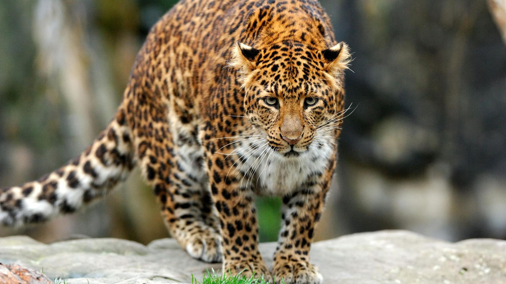
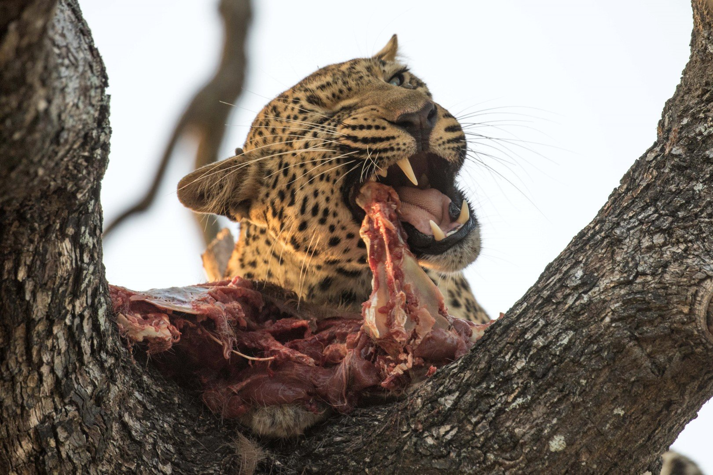
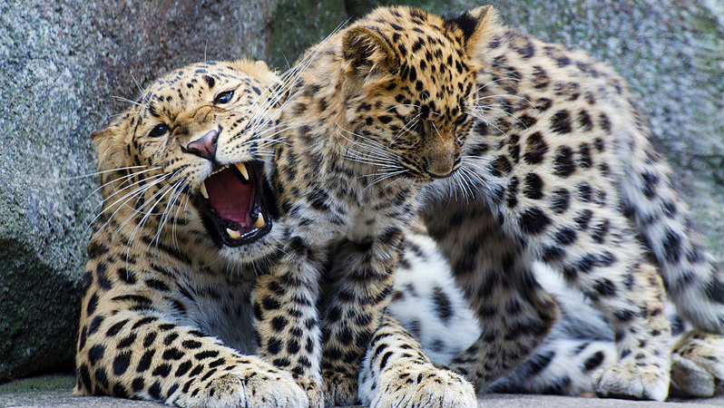
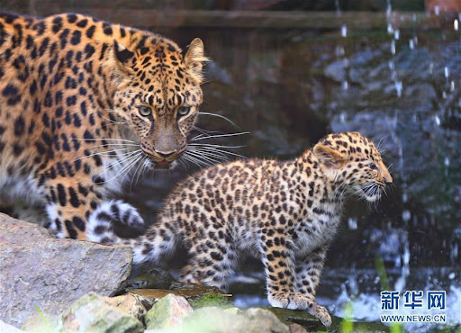
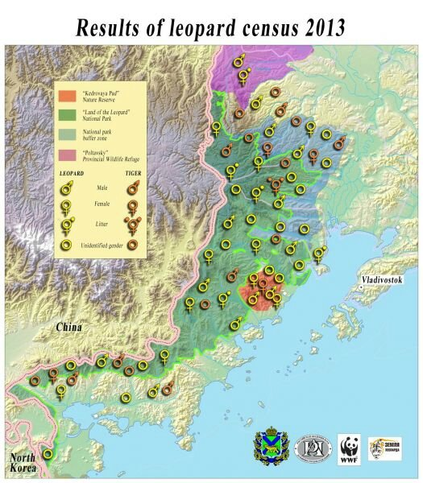
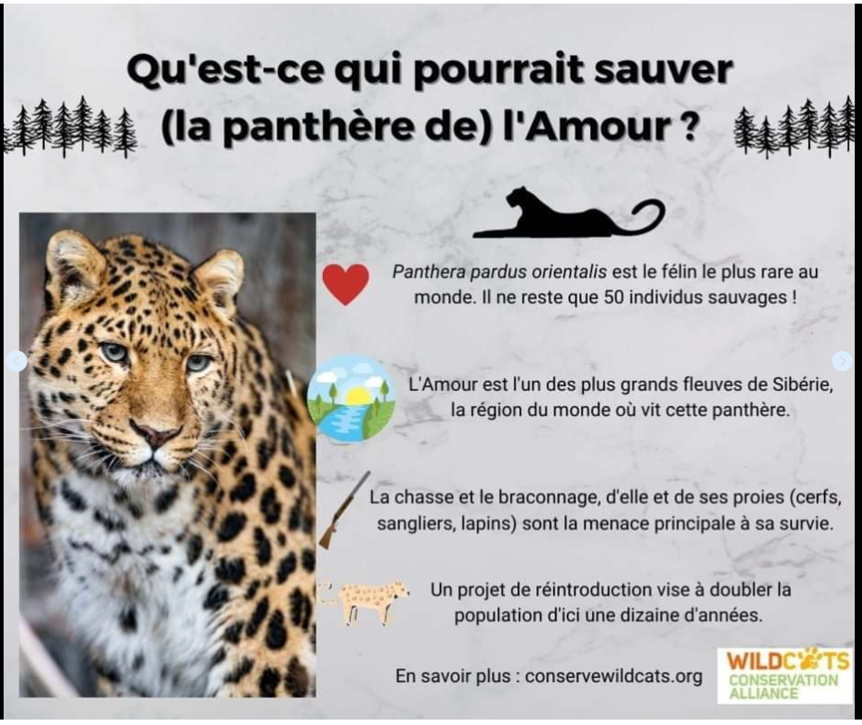

Le léopard de l’Amour, aussi appelé panthère de l'Amour et panthère de Chine, est une sous-espèce de léopards vivant dans le sud-est de la Russie (région du Primorié) et dans le nord-est de la Chine (province du Jilin). Le léopard de l'Amour est un animal solitaire et territorial, qui choisit l'emplacement de son domaine avec beaucoup de soin. Le territoire du léopard de l'Amour est généralement situé dans le bassin d’une rivière et s’étend jusqu’aux frontières topographiques naturelles de la zone. Selon le sexe, l’âge et la taille de la famille, le territoire d’un individu peut mesurer entre 50 et 300 km². Contrairement à la plupart des autres félins, il est surtout actif de jour et relativement peu la nuit, et ce quelle que soit la saison. Cette particularité est sans doute liée au fait que ses proies de prédilection sont elles aussi plutôt diurnes.

Dans la région de l’Ussuri, leurs proies principales sont les chevreuils, les cerfs Sika, les wapitis Manchurian, les cerfs porte-musc, les élans et les sangliers. Ils se nourrissent plus rarement de lièvres, de blaireaux, de volailles et de souris. Dans la Kedrovaya Pad Nature Reserve, les chevreuils constituent leurs proies principales tout au long de l’année, mais ils chassent également de jeunes ours noirs d’Asie de moins de deux ans.

Comme les autres léopards, le léopard de l'Amour se reproduit surtout en hiver. La femelle est en chaleur pendant 12 à 18 jours d'affilée. La gestation dure généralement entre 90 et 105 jours, soit aussi longtemps que les autres sous-espèces de léopard, qui sont pourtant plus imposantes. Au terme de cette période, la femelle donne naissance à une portée de 2 ou 3 petits, plus rarement 4. Ces derniers ouvrent les yeux au bout d'une semaine, commencent à se déplacer à deux semaines, et quittent leur mère lorsqu'ils deviennent capables de se nourrir seuls, entre 18 et 24 mois. Ils n'atteignent toutefois leur maturité sexuelle qu'entre 2 et 3 ans.


| population | lieux |
|---|---|
| 7 à 12 | Chine |
| 20 à 25 | Russie |

